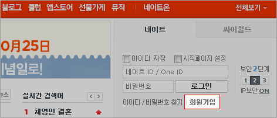
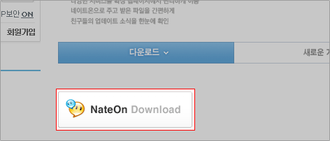
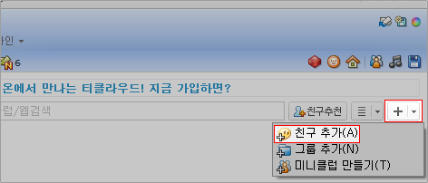
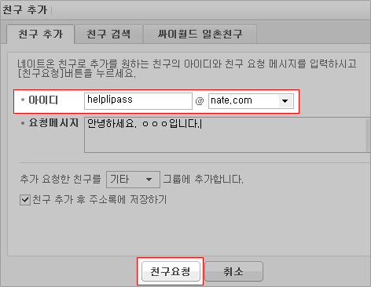

{@ menu_location}{? menu_location.index_ > 0}
>
{/}
{menu_location.value_}
{/}
전화상담보다 빠른 시간에 실시간 원격으로 문제를 해결하기 위한 상담입니다.
안내에 따라 프로그램을 설치하면 원격지원서비스를 통해 PC문제를 해결할 수 있습니다.
nutnut999@nate.com
이용시간 - 평일 09:00 ~ 18:00 / 토요일 09:00 ~ 13:00
네이트온 메신저 설치 순서
1.
네이트온 www.nate.com 에 접속한 뒤 회원가입

2.
메신저 프로그램을 다운로드 한 후 설치

3.
설치한 프로그램에서 로그인하여 나타난 창에서 우측 산단에 붉게 표시된 부분을 클릭하고 친구추가를
선택하여 클릭

4.
친구추가에서 아이디 helplipass@nate.com 을 기재하고 친구요청 친구수락 후에 마우스 오른쪽 버튼으로 대화
신청을 클릭하면 실시간 상담 가능


 전화상담보다 빠른 시간에 실시간 원격으로 문제를 해결하기 위한 상담입니다.안내에 따라 프로그램을 설치하면 원격지원서비스를 통해 PC문제를 해결할 수 있습니다.
전화상담보다 빠른 시간에 실시간 원격으로 문제를 해결하기 위한 상담입니다.안내에 따라 프로그램을 설치하면 원격지원서비스를 통해 PC문제를 해결할 수 있습니다.